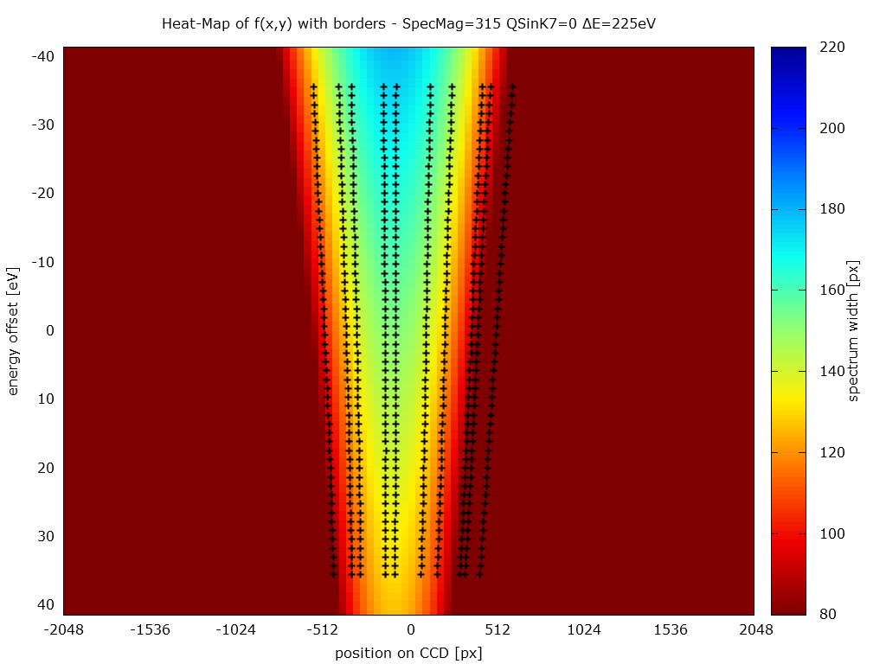

Spatially resolved EELS (SR-EELS) with an in-column Omega filter - characterization of energy filter aberrations and their correction by image processing
<script type='text/javascript'>
// Say hello world until the user starts questioning
// the meaningfulness of their existence.
function helloWorld(world) {
for (var i = 42; --i >= 0;) {
alert('Hello ' + String(world));
}
}
</script>
<style>
p { color: pink }
b { color: blue }
u { color: 'umber' }
</style>
To bad there is no video about the Zeiss Libra 200FE with an in-column Omega filter on youtube.
SR-EELS - An introduction
How to use an imaging filter
L. Reimer, I. Fromm and R. Rennekamp
We call those coordinates "dispersive" for which the one- or two-dimensional intensity distribution is recorded and use different symbols for the "selective" windows.
[Reimer1989]
Dispersive coordinates and selective windows
Dispersive coordinates
Selective windows
x, y (space coordinates)
ΔA (specimen area)
d (diameter of selected area)
Δy (width of slit parallel to x)
ΔE (energy loss)
ΔW (energy window)
Mode
I (dispersive/selective)
ESI (electron spectroscopic imaging)
I(x, y/ΔW)
EELS (electron energy-loss spectroscopy)
Spectrum mode
I(ΔE/ΔA)
Space-dispersive mode
I(x, ΔE/Δy)
ESI data cube
high number of lateral channels
limited number of energy channels
limited energy resolution
EELS data cube
high number of energy channels
high energy resolution
limited number of lateral channels
lateral resolution can be very high
SR-EELS data cube
high number of energy channels
high energy resolution
only one lateral axis
high lateral resolution (x-axis)
SR-EELS - field of view
By default, only up to 25% of our camera area is used.
SR-EELS - manipulating the magnification
How to manipulate the magnification of the SR-EELS data-set?
projective I controls the lateral resolution (nm/px)
no effect on the size at the camera
by default, the energy-filter is not adjusted
projective II controls the lateral and energy resolution (more details on the next slides)
SpecMag - Some quantitative values
Projective II - SpecMag values
SpecMag value
energy range
lateral extend
315
315 is the highest available value
~83 eV
~25%
250
~105 eV
~19%
200
~130 eV
~16%
163
~162 eV
~13%
125
~212 eV
~10%
100
~273 eV
~8%
There are some more ...
SpecMag - energy range
SpecMag - lateral width
Gnuplot - energy range
set encoding utf8
unset title
unset key
set sample 10000
set terminal pngcairo size 1920,1080 enhanced \
font 'Verdana,40' dashed linewidth 4
set xlabel "SpecMag [a.u.]"
set xrange [100:350]
set ylabel "energy range [eV]"
set yrange [0:*]
f(x) = a*x**b
a = 0; b = -1;
fit f(x) "SpecMag.dat" using 1:2 via a,b
set label sprintf("f(x) = %.0f·x^{%.2f}", a, b) at 200,200
set output "../Bilder/SpecMag.png"
plot "" using 1:2 with points pointsize 4, f(x) with lines
Gnuplot - lateral width
...
unset label
set ylabel "width of the ZLP [px]"
set yrange [0:4096]
f(x) = a*x**b
a = 3; b = 1;
fit f(x) "" using 1:3:3 via a,b
set label sprintf("f(x) = %.0f·x^{%.2f}", a, b) at 200,2048
set arrow from 315,0 to 315,4096 nohead linecolor rgb "red"
set label "max. SpecMag -> " at 315,3500 right
set output "../Bilder/SpecMag_widthZLP.png"
plot "" using 1:3 with points pointsize 4, \
f(x) with lines
Zeiss WinTEM - Energy Filter Align (EFA)
Zeiss WinTEM - Energy Filter Align (EFA)
can be found at Service > Energy Filter...
control of 7 filter elements
4 dipole elements
-> shift the spectrum
3 quadrupole elements
-> deform and rotate the spectrum
deform means to compress or expand the spectrum in lateral direction
deform x (QSinK7): increase the lateral size
deform y (QSinK4): controls the focus of this axis
rotation (QCosK4)
EFA - Examples
SpecMag=315 and QSinK7=0%
SpecMag=315 and QSinK7=-11%
The optimized value of QSinK7 increases the lateral magnification by about 4 times. QSinK4 depends on QSinK7.
Aberrations
Aberrations
The lateral extend decreases with increasing energy loss
This aberration is visible at all previous images
Described by a polynomial of 2nd degree
Fit at top border
Fit at bottom border
(This plots were automatically created by SR-EELS_characterisation.ijm and they are only used to check the tabulated results.)
To be continued ...
Aberrations - Method of characterization
Aberrations - Method of characterization
1024px by 1024px sections of 4096px by 4096px images. The marks at the borders and the centre of the signal were automatically created by SR-EELS_characterisation.ijm.
The ImageJ macro uses a combination of a Gaussian fit and the build-in threshold routine to detect the borders of the signal. At the given example 64 energy channels are "binned" for more reliable results.
...
set isosample 16
temp_table = temp_folder."/temp.txt"
set table temp_table
set xrange [*:*]
set yrange [*:*]
input_filename(n) = sprintf("../".input_prefix."%d.txt", n)
splot for [i=index_start:index_stop:index_inc] input_filename(i) \
using (bin*$4-cam_width/2):(bin*$2-cam_width/2):(bin*$6) with points
unset table
set output temp_folder."/width.png"
plot for [i=index_start:index_stop:index_inc] input_filename(i) \
using 1:(bin*$6) notitle
z_min = 10*floor(GPVAL_Y_MIN/10)
z_max = 10*ceil(GPVAL_Y_MAX/10)
...
Gnuplot - 3D-visualization
...
set zrange [z_min:z_max]
set xyplane at z_min
set title "3D View with f(x,y) - ".head
output_file = output_folder."3_3D_f(x,y)_".output.".png"
set output output_file
f(x,y) = a00 + a10*x + a20*x**2 + a01*y + a11*x*y + a21*x**2*y + a02*y**2 \
+ a12*x*y**2 + a22*x**2*y**2
a00 = 1.0; a10 = 1.0; a20 = 1.0;
a01 = 1.0; a11 = 1.0; a21 = 1.0;
a02 = 1.0; a12 = 1.0; a22 = 1.0;
fit f(x,y) temp_table using ($1):($2):($3):(1) \
via a00, a10, a20, a01, a11, a21, a02, a12, a22
splot f(x,y/disp_y) title "f(x,y)" with lines linestyle 3,\
temp_table using ($1):($2*disp_y):(f($1,$2)) title "f(x,y)" with lines linestyle 2, \
temp_table using ($1):($2*disp_y):($3) title "Messwerte" with points linestyle 1
...
Gnuplot - 3D-visualization
...
set fit logfile "fit_".output.".txt"
set print "summery_".output.".txt"
print "f(x,y) = a00 + a10*x + a20*x**2 + a01*y + a11*x*y + a21*x**2*y \
+ a02*y**2 + a12*x*y**2 + a22*x**2*y**2"
printstr(M, N) = \
sprintf('print "a%d%d = ", a%d%d, " /pm ", a%d%d_err', M, N, M, N, M, N)
do for [i=0:2] {
do for [j=0:2] {
eval(printstr(j, i))
}
}
...
Aberrations - Heatmap-visualization

Draft version! The shown pairs of borders will be replaced soon.
Gnuplot - Heatmap-visualization
...
set view map
set palette defined (0 '#7f0000', \
...
8 '#000090')
set cblabel "spectrum width [px]"
set cbrange [z_min:z_max]
set table table_f
splot f(x,y) with points
unset table
set output output_file
plot table_f using ($1):($2*disp_y):($3) with image , \
for [i=index_start:index_stop:index_inc] input_filename(i) \
using (bin*$4-2048):((bin*$2-2048)*disp_y) notitle with points linestyle 1 ,\
for [i=index_start:index_stop:index_inc] input_filename(i) \
using (bin*$5-2048):((bin*$2-2048)*disp_y) notitle with points linestyle 1
...
Aberrations
The lateral extend decreases with increasing energy loss
This aberration is visible at all previous images
Described by a polynomial of 2nd degree
The lateral width changes at each energy channel
Highest value at the centre
The decrease limits the field of view
Described by a polynomial of 2nd degree
Width vs lateral position for \(\Delta E = 0\)
Aberrations - 2D-visualization
\(\Delta E\) represents the energy offset at the given dataset. Electrons that traverse the energy filter at an optimal ray pass will have an energy offset of \(\Delta E = 0\).
\(y_n\) is the position, where the polynomial \(f_n\) intersects the axis with \(\Delta E = 0\).
...
set terminal unknown
set table temp_folder."/borders.txt"
set xrange [-2048:2048]
set yrange [*:*]
plotstr3D(N) = sprintf('splot input_filename(%d) \
using (bin*$2-2048):(bin*$4-2048):(f%dL(0)) with points, \
input_filename(%d) using (bin*$2-2048):(bin*$5-2048):(f%dR(0)) \
with points', N, N, N, N)
plotstr3DL(N) = sprintf('replot input_filename(%d) \
using (bin*$2-2048):(bin*$4-2048):(f%dL(0)) with points', N, N)
plotstr3DR(N) = sprintf('replot input_filename(%d) \
using (bin*$2-2048):(bin*$5-2048):(f%dR(0)) with points', N, N)
eval(plotstr3D(index_start))
...
Gnuplot - 2D-visualization
...
do for [i=index_start+index_inc:index_stop:index_inc] {
eval(plotstr3DL(i))
eval(plotstr3DR(i))
}
replot
...
fit f(x,y) table3D using ($1):($3):(stringcolumn(4) eq "u"?1/0:$2):(1) \
via a00, a10, a20, a01, a11, a21, a02, a12, a22
set table temp_folder."/field.txt"
...
plot table_field using ($2):($1*disp_y) title "f(x,y)" with lines \
linestyle 3 linewidth line_width-1, \
table3D using (stringcolumn(4) eq "u"?1/0:$2):($1*disp_y) \
title "&{xxx}Messwerte" with points
...


_SpecMag=315_QSinK7=0_225eV.png)
_SpecMag=315_QSinK7=0_225eV.png)